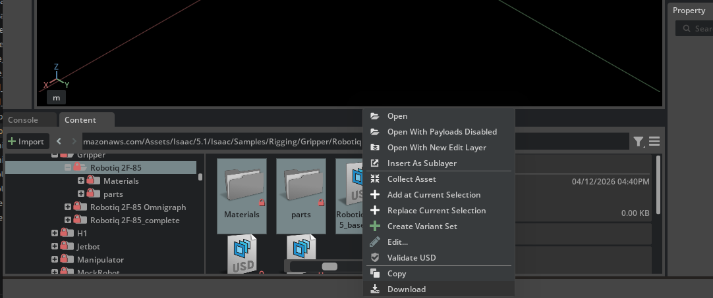
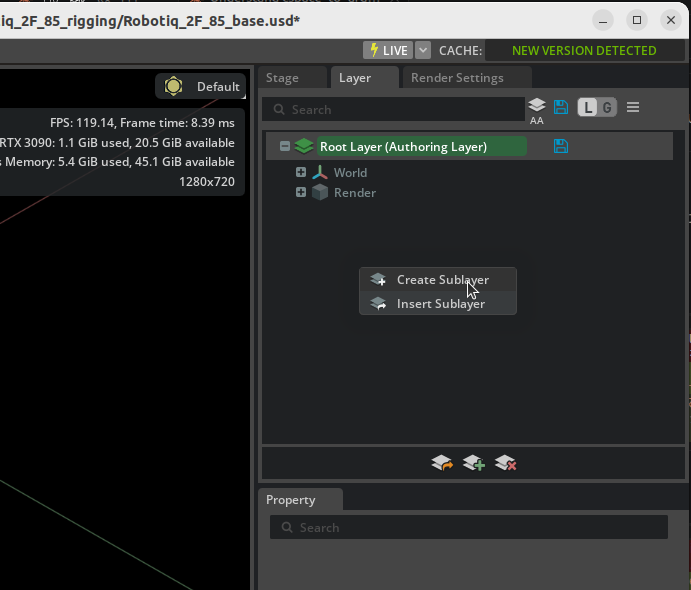
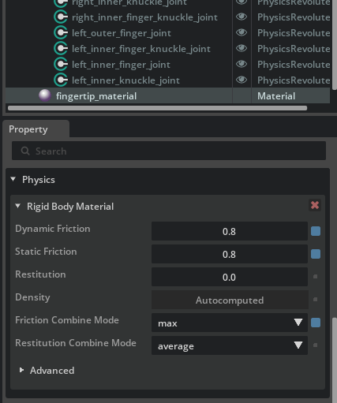

閉ループ構造のリギング¶
学習目標¶
このチュートリアルを修了すると、以下の内容を習得できます：
- USD レイヤーを使ったアセット編集ワークフロー
- マテリアルとジョイントの調整
- 閉ループアーティキュレーションチェーンの分断方法
- ジョイントドライブとミミックジョイントの設定
- コリジョンメッシュとセルフコリジョンの最適化
- OmniGraph を使ったグリッパー制御の構築
はじめに¶
前提条件¶
- チュートリアル 5: モバイルロボットのリギング を完了していること
使用するアセット¶
このチュートリアルでは、Isaac Sim に同梱されている事前インポート済みの Robotiq 2F-85 グリッパーアセットを使用します：
所要時間¶
約 30 分
概要¶
ロボットグリッパーのような機構には、リンクが閉じたループ（閉ループ）を形成する構造が多くあります。しかし、物理シミュレーションのアーティキュレーション（関節連鎖）はキネマティックツリー（木構造）で表現する必要があり、ループ構造をそのまま扱うことはできません。
このチュートリアルでは、Robotiq 2F-85 パラレルグリッパーを題材に、閉ループ構造を含むロボットを Isaac Sim で正しくリギングする方法を学びます。具体的には以下の流れで進めます：
- レイヤーを使ったアセット編集 — 元のファイルを壊さずに設定を行うワークフロー
- ジョイントの調整 — ジョイントの向きや制限値の修正、摩擦マテリアルの設定
- アーティキュレーションループの分断 — 閉ループを木構造に変換
- テスト環境の構築 — グリッパーの動作を確認するためのシーン作成
- ジョイントドライブとミミックジョイントの設定 — グリッパーの指を制御するドライブとミミック連動の追加
- コリジョンメッシュの最適化 — 把持のための衝突形状の調整
- 設定の保存 — レイヤーごとに変更を保存
- OmniGraph によるグリッパー制御 — 入力信号の切り替えでグリッパーを開閉
閉ループ構造とは
閉ループ構造とは、リンクとジョイントが環状に接続された機構のことです。例えば、パラレルグリッパーの 2 本の指は、それぞれ複数のリンクを介してボディに接続されており、先端で物体を挟むことで閉じたループを形成します。一方、UR10e のようなシリアルロボットアームは、ベースからエンドエフェクタまで一本の鎖状（開ループ）に接続されています。
ステップ 1：レイヤーを使ったアセット編集¶
元の USD ファイルを直接編集するのではなく、レイヤーを使って非破壊的に編集する方法を学びます。この方法であれば、元のアセットファイルを保持したまま設定変更を行え、アセットの更新や再利用にも対応しやすくなります。
USD レイヤーとは
USD のレイヤーは、Photoshop のレイヤーに似た仕組みです。ベースとなるファイルの上に編集用のレイヤーを重ねることで、元のファイルを一切変更せずにプロパティの追加・変更ができます。レイヤーの変更が不要になれば、レイヤーを外すだけで元の状態に戻せます。
1-1. 作業ディレクトリの準備¶
サンプルアセットは書き込み禁止のため、まず作業用のフォルダにコピーします：
- 任意の場所（例：デスクトップ）に作業用フォルダを作成します（例：
Robotiq_2F_85_rigging） -
サンプルアセット
Samples/Rigging/Gripper/Robotiq 2F-85のフォルダ内にあるRobotiq_2F_85_base.usdファイルとMaterialsとpartsディレクトリを、作成した作業用フォルダにダウンロードします
1-2. レイヤーワークフローの概要¶
このステップで、以下の 3 ファイル構成を作成します：
| ファイル | 役割 | 作成方法 |
|---|---|---|
Robotiq_2F_85_base.usd |
ベースとなるアセット（変更しない） | サンプルからコピー済み |
Robotiq_2F_85_edit.usd |
ジョイント調整やリギング設定を記録するレイヤー | ユーザーが作成 |
Robotiq_2F_85_config.usd |
上記を束ねて読み込む構成ファイル | ユーザーが作成 |
1-3. 編集用レイヤーの作成¶
リギング設定を記録するための編集用レイヤーを作成します。ここでは、新しい USD ファイルを作成し、ベースアセットをサブレイヤーとして読み込むことで、元のファイルを変更せずに編集できる環境を構築します。
- File > New で新しいステージを作成します
- File > Save As で、作業用フォルダに
Robotiq_2F_85_edit.usdとして保存します - Layer タブを開きます（表示されていない場合は Window > Layer で表示）
-
Content Browser やファイルマネージャーから
Robotiq_2F_85_base.usdを Layer タブの Root Layer にドラッグ＆ドロップします
-
ベースアセットのグリッパーが Stage に表示されることを確認します
これにより、_edit.usd（Root Layer）が _base.usd（サブレイヤー）の上に重なる構成となり、以降の編集内容は _edit.usd に記録され、ベースアセットは変更されません。
レイヤーの重なり順序
USD のサブレイヤーは上位のレイヤーが優先されます。この構成では、Root Layer（_edit.usd）の意見（opinion）がサブレイヤー（_base.usd）より優先されるため、_edit.usd で行った変更が _base.usd の値を上書きします。
一方、上位レイヤーで上書きしていないプロパティについては、下位レイヤーの値がそのまま最終結果に反映されます。つまり、_base.usd のメッシュやマテリアルを更新した場合、_edit.usd で同じプロパティを変更していなければ、その更新は自動的に反映されます。これが非破壊編集ワークフローの利点です。
ただしこれは、プリムのパスとプロパティ名が変わらないことが前提です。_base.usd 側でプリムの名前変更・削除・階層変更を行うと、_edit.usd に記録された上書き（opinion）は古いパスを参照したまま残るため自動では追従できず、_edit.usd 側の修正が必要になります。
Layer タブと Stage パネルの役割分担
Layer タブはレイヤーの追加や並び替え、編集ターゲット（編集内容がどのレイヤーに記録されるか）の切り替えに使うパネルです。プリムを選択して Properties から編集する操作自体は、引き続き Stage パネルから行ってください。Layer タブの中でプリムを探そうとすると、レイヤーごとの opinion 一覧が表示されるだけでプリムを直接編集できず、迷子になります。
後のステップでは作業内容に応じて編集ターゲットを _edit.usd ⇔ _config.usd と切り替えますが、「Layer タブで対象レイヤーをアクティブにする → Stage パネルに戻ってプリムを選択する」 という流れは常に変わりません。
1-4. 構成ファイルの作成¶
次に、テストシーンを構築するための構成ファイルを作成します。このファイルでは、編集済みのグリッパーアセットをペイロードとしてシーンに配置します。
- File > New で新しいステージを作成します
- File > Save As で、同じ作業用フォルダに
Robotiq_2F_85_config.usdとして保存します - Content Browser やファイルマネージャーから
Robotiq_2F_85_edit.usdを Stage パネルの/Worldにドラッグ＆ドロップします -
Stage パネルに追加されたプリム（青い矢印アイコン）の名前を
Robotiq_2F_85にリネームしますプリムのリネーム
追加されたプリムの名前はファイル名に基づいて
Robotiq_2F_85_editとなる場合があります。後のステップで使用するパス（/World/Robotiq_2F_85/base_linkなど）と一致させるため、Robotiq_2F_85にリネームしてください。
この構成により、_config.usd を開くだけで、ベースアセット＋編集レイヤーの内容がグリッパーとしてシーンに読み込まれます。
Payload と Reference の違い
Stage にアセットを追加する方法として、Payload（ペイロード）と Reference（リファレンス）の 2 つがあります。
| Payload（ペイロード） | Reference（リファレンス） | |
|---|---|---|
| Stage 上のアイコン | 青い矢印 | オレンジの矢印 |
| 追加方法 | ドラッグ＆ドロップ | 右クリック > Add > Reference |
| 遅延読み込み | 対応（アンロード可能） | 非対応（常に読み込まれる） |
| 主な用途 | シーンに配置するアセット | 常に必要な依存ファイル |
Payload はシーンが大規模になったとき、必要のないアセットを一時的にアンロードしてメモリとパフォーマンスを節約できる仕組みです。Stage パネルでプリムを右クリックし Unload を選択すると、そのアセットをアンロードできます。Reference は常に読み込まれるため、アンロードできません。
今回のようにシーンにアセットを配置する場合は、Payload（ドラッグ＆ドロップ）が適しています。
サブレイヤーとの使い分け
USD にはサブレイヤー、リファレンス、ペイロードなど複数の合成方法がありますが、このチュートリアルでは以下のように使い分けています：
- サブレイヤー（
_edit.usd→_base.usd）：同じ Prim 階層を共有し、プロパティを上書きする。アセットの非破壊編集に適している。 - ペイロード（
_config.usd→_edit.usd）：外部アセットをシーン内の独立した Prim として配置する。シーン構築に適している。
レイヤー分離のメリット
_edit.usd: ロボットのリギング設定（ジョイント、ドライブ、コリジョンなど）のみを格納_config.usd: テスト用のシーン要素（地面、テスト用オブジェクトなど）を格納
この分離により、リギングが完成した後は _edit.usd を他のシーンでも再利用できます。
ステップ 2：ジョイントの調整¶
作業ファイル：Robotiq_2F_85_edit.usd
このステップの変更はすべてグリッパーアセットのリギング設定です。_edit.usd を開いた状態で作業してください。
CAD からインポートされたジョイントには、向きが 180 度反転している場合があります。シミュレーションを正しく動作させるために、これらを修正します。
2-1. ジョイントの可視化¶
ジョイントの向きを確認するために、ビューポートでジョイントフレームを可視化します：
- ビューポート上部の目のアイコンをクリックします
- Show By Type > Physics > Joints を有効にします
これにより、各ジョイントの位置と回転軸がビューポート上にギズモとして表示されます。
ジョイントギズモの見方
ジョイントを可視化すると、各ジョイントの位置に座標軸の矢印が表示されます。回転ジョイント（Revolute Joint）の場合、回転軸（通常は特定の軸の矢印）の向きがジョイントの正方向を示します。この正方向は、ジョイントの角度値が正のときにリンクが回転する方向を決定します。
2-2. ジョイントの向きの確認¶
Stage パネルで各ジョイントを選択し、ビューポートに表示されるギズモの軸の向きを確認します。
CAD からインポートされたジョイントでは、回転軸の向きが 180 度反転している場合があります。反転しているジョイントは、回転軸の正方向が期待と逆を向いています。
2-3. ジョイントの向きの修正¶
反転しているジョイントの向きを修正します：
- Stage パネルで反転しているジョイントを選択します
例）finger_joint: 指を開く方向に75度回転しようとするのがわかります

- Properties パネルの Rotation セクションで、Rotation 0 と Rotation 1 の X 軸に 180 度のオフセットを適用します
- ギズモの向きが正しくなったことを確認します
例）finger_joint: 指を閉じる方向に75度回転するようになっています

この Robotiq 2F-85 アセットでの修正対象
このアセットでは finger_joint、right_outer_knuckle_joint、right_outer_finger_joint、left_outer_finger_jointの4 つのジョイントで向きの修正が必要です。ここで修正しておかないと、ステップ 5 でジョイントドライブを設定した際に、指が期待と逆方向に動いてしまいます。
2-4. ジョイント制限の設定¶
各ジョイントに適切な可動範囲を設定します（デフォルトで正しい可動域が入っているはずです）：
| ジョイント | 下限 | 上限 | 備考 |
|---|---|---|---|
left_outer_finger_joint |
0° | 180° | 外側指リンクの可動範囲 |
right_outer_finger_joint |
0° | 180° | 外側指リンクの可動範囲 |
finger_joint |
0° | 75° | メインの駆動ジョイント |
right_outer_knuckle_joint |
0° | 75° | 右側の外側ナックル |
| その他のジョイント | — | — | 制限なし（デフォルトのまま） |
2-5. 指先の摩擦マテリアルの作成¶
グリッパーの把持性能を向上させるため、指先に摩擦の高いマテリアルを設定します：
- メニューから Create > Physics > Physics Material を選択
- Rigid Body Material を選択し、
fingertip_materialにリネーム -
以下のパラメータを設定：
パラメータ 値 説明 Static Friction 0.8静止摩擦係数（ゴムに近い値） Dynamic Friction 0.8動摩擦係数 Friction Combine Mode Max摩擦の合成方法（大きい方を採用） 
-
作成したマテリアルを
right_inner_fingerとleft_inner_fingerのメッシュに適用
Instanceable プロパティの無効化
マテリアルを適用する際、Xform の Instanceable プロパティが有効になっているとマテリアルを個別に設定できないことがあります。その場合は Instanceable を無効にしてから、メッシュコンポーネントに直接マテリアルを適用してください。
ステップ 3：アーティキュレーションループの分断¶
作業ファイル：Robotiq_2F_85_edit.usd
このステップの変更はグリッパーアセットのリギング設定です。引き続き _edit.usd で作業してください。
3-1. 問題の理解¶
この状態でシミュレーションを開始すると、以下のような警告が表示されます：

これは、アーティキュレーション（関節連鎖）がループを形成しているためです。Isaac Sim のアーティキュレーションはキネマティックツリー（木構造）である必要があり、閉ループをそのまま扱うことはできません。
なぜループが問題になるのか
物理シミュレータのアーティキュレーションソルバーは、ベースリンクからエンドエフェクタまでの一方向の連鎖（ツリー構造）を前提に設計されています。ループがあると、ソルバーが関節の拘束を正しく解けなくなります。
3-2. 分断するジョイントの選択基準¶
ループを解消するために、1 つのジョイントをアーティキュレーションから除外します。除外されたジョイントは、最大座標ジョイント（Maximal Coordinate Joint）として扱われ、ソルバーの優先度が低くなります。
最適なジョイントを選ぶための基準：
- アーティキュレーションチェーンの長さを最小化する位置にあること
- 制限値、抵抗、ドライブが不要なジョイントであること
- ロボットの機能への干渉が最小限であること
3-3. ループの分断手順¶
この Robotiq 2F-85 グリッパーでは、インナーシャフトとボディを接続する inner_knuckle_joint が最適な候補です。

- Stage パネルで
left_inner_knuckle_jointを選択 - Properties パネルの Physics セクションで Exclude From Articulation にチェックを入れる
- 同様に
right_inner_knuckle_jointにも Exclude From Articulation を設定
Exclude From Articulation とは
このオプションを有効にすると、該当ジョイントはアーティキュレーションツリーから除外されます。ジョイント自体は物理的に存在し続けますが、アーティキュレーションソルバーではなく通常のジョイントソルバー（Maximal Coordinate）で処理されます。結果として、ループが解消されシミュレーションが正常に動作します。
これでシミュレーションを再度実行すると、ループに関する警告が消えます。
ステップ 4：テスト環境の構築¶
作業ファイル：Robotiq_2F_85_config.usd
テスト環境（地面、シリンダー、移動用ジョイントなど）はテストシーン固有の要素です。_config.usd を開いた状態で作業してください。
グリッパーの動作を確認するためのテストシーンを構築します。グリッパーを上下・前後に移動できる構造を作り、物体を把持するテストを行います。
4-1. テスト環境の構成¶
以下の要素をシーンに追加します。次節の Python スクリプトを実行することで一括構築できます。
移動用の足場（グリッパーを上下・前後に動かすための構造）:
| 要素 | 役割 |
|---|---|
Xform（Rigid Body API 付き） |
中間プリム（Z 軸プリズマティックの基準） |
Xform_1（Rigid Body API 付き） |
グリッパーを保持するプリム（X 軸プリズマティックの基準） |
| Fixed Joint | ワールド → Xform を固定 |
Prismatic Joint Joint_Z（Z 軸） |
Xform → Xform_1（上下移動） |
Prismatic Joint Joint_X（X 軸） |
Xform_1 → base_link（前後移動） |
プリズマティックジョイントのドライブパラメータ:
| パラメータ | 値 | 説明 |
|---|---|---|
| Maximum Joint Velocity | 5.0 |
最大ジョイント速度 |
| Joint Limits | [0, 1] |
可動範囲（メートル） |
| Damping | 10,000 |
ダンピング係数 |
| Stiffness | 10,000 |
剛性係数 |
シーン要素:
- シリンダー（把持対象）: スケール
[0.05, 0.05, 0.2]、位置 X=0.12、質量 0.20 kg、コライダーは Convex Hull 近似 - グランドプレーン: 位置 Z=-0.1
- Physics Scene: GPU Dynamics 無効
4-2. Python スクリプトによる自動セットアップ¶
上記の構成は、以下の Python スクリプトを Isaac Sim のメニューバーの Window から立ち上げられる Script Editor で実行することで一括構築できます：
from pxr import Usd, UsdGeom, UsdPhysics, PhysxSchema, PhysicsSchemaTools, Gf, Sdf
import omni.usd
stage = omni.usd.get_context().get_stage()
# Xform ノードの作成
xform = UsdGeom.Xform.Define(stage, "/World/Xform")
xform_1 = UsdGeom.Xform.Define(stage, "/World/Xform_1")
# Rigid Body API と質量の適用
for node in [xform, xform_1]:
UsdPhysics.RigidBodyAPI.Apply(node.GetPrim())
mass_api = UsdPhysics.MassAPI.Apply(node.GetPrim())
mass_api.CreateMassAttr(0.1)
# 固定ジョイントの作成
fixed_joint = UsdPhysics.FixedJoint.Define(
stage, xform.GetPath().AppendChild("fixed_joint")
)
fixed_joint.CreateBody1Rel().SetTargets([str(xform.GetPath())])
# プリズマティックジョイント 1（Z 軸方向）
prismatic_joint_1 = UsdPhysics.PrismaticJoint.Define(stage, "/World/Joint_Z")
prismatic_joint_1.CreateAxisAttr("Z")
prismatic_joint_1.CreateLowerLimitAttr(0.0)
prismatic_joint_1.CreateUpperLimitAttr(1.0)
prismatic_joint_1.CreateBody0Rel().SetTargets([str(xform.GetPath())])
prismatic_joint_1.CreateBody1Rel().SetTargets([str(xform_1.GetPath())])
# プリズマティックジョイント 2（X 軸方向）
prismatic_joint_2 = UsdPhysics.PrismaticJoint.Define(stage, "/World/Joint_X")
prismatic_joint_2.CreateAxisAttr("X")
prismatic_joint_2.CreateLowerLimitAttr(0.0)
prismatic_joint_2.CreateUpperLimitAttr(1.0)
prismatic_joint_2.CreateBody0Rel().SetTargets([str(xform_1.GetPath())])
prismatic_joint_2.CreateBody1Rel().SetTargets(["/World/Robotiq_2F_85/Robotiq_2F_85/base_link"])
# ジョイントドライブの追加
for joint in [prismatic_joint_1, prismatic_joint_2]:
drive = UsdPhysics.DriveAPI.Apply(joint.GetPrim(), "linear")
drive.CreateDampingAttr(10000)
drive.CreateStiffnessAttr(10000)
px_joint = PhysxSchema.PhysxJointAPI.Get(stage, str(joint.GetPath()))
px_joint.CreateMaxJointVelocityAttr().Set(5.0)
# グランドプレーンの追加
PhysicsSchemaTools.addGroundPlane(
stage, "/World/groundPlane", "Z", 100, Gf.Vec3f(0, 0, -0.1), Gf.Vec3f(1.0)
)
# シリンダー（把持対象）の作成
result, path = omni.kit.commands.execute("CreateMeshPrimCommand", prim_type="Cylinder")
cylinder_prim = stage.GetPrimAtPath(path)
cylinder_prim.GetAttribute("xformOp:scale").Set((0.05, 0.05, 0.2))
cylinder_prim.GetAttribute("xformOp:translate").Set((0.12, 0, 0))
# シリンダーに物理属性を追加（コライダーは Convex Hull 近似）
cylinder_body = UsdPhysics.RigidBodyAPI.Apply(cylinder_prim)
UsdPhysics.CollisionAPI.Apply(cylinder_prim)
mesh_collision = UsdPhysics.MeshCollisionAPI.Apply(cylinder_prim)
mesh_collision.CreateApproximationAttr().Set("convexHull")
massAPI = UsdPhysics.MassAPI.Apply(cylinder_body.GetPrim())
massAPI.CreateMassAttr(0.20)
# Physics Scene の作成
scene = UsdPhysics.Scene.Define(stage, Sdf.Path("/physicsScene"))
physxSceneAPI = PhysxSchema.PhysxSceneAPI.Apply(scene.GetPrim())
physxSceneAPI.CreateEnableGPUDynamicsAttr(False)
GPU Dynamics が有効だとエラーが発生します
Physics Scene の Enable GPU Dynamics が有効になっていると、ジョイントドライブの setDriveTarget() が使用できず、以下のようなエラーが発生します：
PhysX error: PxArticulationJointReducedCoordinate::setDriveTarget(): it is illegal to call this method if PxSceneFlag::eENABLE_DIRECT_GPU_API is enabled!
上記の Python スクリプトでは CreateEnableGPUDynamicsAttr(False) で無効にしていますが、手動でテスト環境を構築した場合や、前のチュートリアル（09: Deformable Body）の設定が残っている場合は、Physics Scene を選択して Enable GPU Dynamics がオフになっていることを確認してください。
4-3. テスト足場の動作確認¶
スクリプト実行後、テスト足場（プリズマティックジョイント）が正しく動作することを確認します：
- シミュレーションを開始します
- Stage パネルで Joint_X を選択し、Properties パネルの Joint Drive セクションで Target Position を
1に設定して、グリッパーが前方に移動することを確認します - 同様に Joint_Z の Target Position を
1に設定して、グリッパーが上昇することを確認します - 確認後は Target Position を
0に戻します
Physics Inspector を使う場合
Tools > Physics > Physics Inspector を使うと、シミュレーションを実行せずにジョイントの Drive Target をスライダーで操作して挙動を試すこともできます。表示されない場合はシミュレーションを開始・停止してからリフレッシュボタンをクリックしてください。
この段階では指が自由に回転します
この時点ではグリッパーの指にドライブが設定されていないため、指がラグドールのように自由に回転します。これは正常な動作で、次のステップでジョイントドライブとミミックジョイントを設定して解決します。
ステップ 5：ジョイントドライブとミミックジョイントの設定¶
作業ファイル：Robotiq_2F_85_edit.usd
ドライブとミミックジョイントはグリッパーアセットのリギング設定です。_edit.usd を開いた状態で作業してください。
グリッパーの指を制御するためのジョイントドライブとミミックジョイントを設定します。Robotiq 2F-85 は 1 つのモーターで両方の指を同期駆動する構造のため、メイン駆動ジョイント（finger_joint）にのみドライブを設定し、反対側（right_outer_knuckle_joint）はミミックジョイントで連動させます。
5-1. メイン駆動ジョイントへのドライブ追加¶
finger_joint に Angular Drive を追加し、力制限付きの弱い位置制御（force-driven grasp）で動作するように設定します。
- Stage パネルで
finger_jointを選択 - Properties パネルで Add > Physics > Angular Drive をクリック
-
以下のパラメータを設定：
パラメータ 値 説明 Stiffness 10ごく弱い位置制御 Damping 0.1ダンピング Max Force 16.5N最大把持力（データシートに基づく値） Maximum Joint Velocity 130deg/s最大関節速度（データシートに基づく値、Joint > Advanced タブで設定） -
グリッパーのすべてのジョイントを選択し、Properties パネルで Add > Physics > Joint State（プリズマティックジョイントの場合は Joint State Linear）を追加します
力制御に近い弱い位置制御
Stiffness を極端に小さく、Max Force で出力トルクを制限することで、目標位置に向かって動きつつ、物体に接触したら一定の力で挟み込む「force-driven grasp」を実現します。Stiffness を大きくしすぎると、物体に接触しても目標位置に到達しようとして過大な力が発生します。
Isaac Sim 6.0 でのパラメータ変更
5.1 までの公式チュートリアルは Stiffness 0 / Damping 5000 / Max Force 180 N の速度ベースの力制御でしたが、6.0 では上記の Stiffness 10 / Damping 0.1 / Max Force 16.5 N の位置ベースの制御に変更されました。また、6.0 の公式手順では finger_joint と right_outer_knuckle_joint のジョイント制限を lower -75／upper 0 に反転させています。本ページではステップ 2-3 でジョイントの向き自体を修正しているため、制限は 0〜75 のままで、正の目標値が「閉じる」方向に対応します。
right_outer_knuckle_joint にはドライブを追加しません
反対側の指は次節（5-2）でミミックジョイントとして設定します。ミミックジョイントは参照ジョイントのドライブ特性を自動的に継承するため、個別のドライブは不要です（むしろ追加するとドライブ同士が干渉します）。
5-2. ミミックジョイントによる左右指の連動¶
right_outer_knuckle_joint をミミックジョイントとして設定し、finger_joint の動きに連動させます。
- Stage パネルで
right_outer_knuckle_jointを選択 - Properties パネルで Add > Physics > Mimic Joint をクリック
-
以下のパラメータを設定：
パラメータ 値 説明 Gearing -1.0参照ジョイントの動きに対する係数 Reference Joint finger_joint連動元のジョイント
ミミックジョイントとは
ミミックジョイントは、参照ジョイントの動きに連動して自動的に動くジョイントです。Gearing は参照ジョイントの位置に対する係数で、-1.0 を指定すると参照ジョイントが +75° 回転したときに -75° 回転します。Robotiq 2F-85 の左右指のジョイントは内部的に逆方向の軸として定義されているため、-1.0 で正しく対称な動きになります。
5-3. 指の平行性を維持するスプリング¶
Robotiq 2F-85 グリッパーには、指先を平行に保つためのスプリング機構があります。これを再現するために、内側の指ジョイントに弱い剛性を持つ Angular Drive を設定します：
- Stage パネルで
left_inner_finger_jointを選択 - Properties パネルで Add > Physics > Angular Drive をクリック
-
以下のパラメータを設定：
パラメータ 値 説明 Stiffness 0.0002弱い剛性で平行を維持 Damping 0.00001ごく弱いダンピング Max Force 0.5Nスプリングの最大出力 Target Position 0.0平行な状態を目標位置とする -
right_inner_finger_jointにも同じ設定を適用します
この設定により、グリッパーが閉じる際に指先が平行を保ちながら動き、物体に接触するまで抵抗なく閉じることができます。
5.1 からの変更
5.1 までの公式チュートリアルでは left/right_outer_finger_joint に Stiffness 0.05 を設定していましたが、6.0 では left/right_inner_finger_joint に Stiffness 0.0002 / Damping 0.00001 / Max Force 0.5 N を設定する手順に変更されました。使用しているアセットのバージョンによってジョイント構成が異なる場合は、指先の平行が保たれるように該当ジョイントと値を調整してください。
Drive の Stiffness を使うこと
ジョイント自体の Stiffness 属性ではなく、必ず Angular Drive の Stiffness に設定してください。アーティキュレーション内のジョイントでは、ジョイント自体の Stiffness 属性は無視されるため、Drive 経由でのみ剛性を効かせることができます。
上記のような警告が出た場合は、ジョイント自体に Stiffness を設定してしまっています。
この設定を忘れると指のリンクが折れて裏返ります
外側の指ジョイントに Drive の Stiffness を設定しないと、シミュレーション開始直後に指のリンク（outer_finger）が内側に折れて裏返ったような姿勢になり、グリッパーが正常に閉じなくなります。Drive の Stiffness が「指を平行な姿勢に戻すばね」として機能しているためです。
5-4. グリッパー単体の動作確認¶
ここからは作業ファイルを Robotiq_2F_85_config.usd に切り替えます
5-4 以降は動作検証のステップです。_config.usd ではテスト足場（プリズマティックジョイント）でグリッパーが固定されているため、シミュレーションを実行しても本体が落下せず、開閉動作の確認がしやすくなります。Layer タブで _config.usd を編集ターゲットに切り替えた後、Stage パネルに戻って finger_joint などのプリムを選択して操作してください（次節以降の変更は _config.usd に入っても構いませんが、ドライブ値の最終調整は _edit.usd に戻してから記録します）。
ここまでの設定でグリッパー単体が正しく動作するか確認します。弱い位置制御（Stiffness 10）に設定したため、Target Position で開閉を指示できます：
- シミュレーションを開始（再生ボタン）
- Stage パネルで
finger_jointを選択 - Properties パネルの Joint Drive セクションを開く
- Target Position の値を変更して開閉動作を確認：
40（度）にすると指が閉じる0に戻すと指が開く- ミミック設定により、左右の指が同期して動くことを確認
- 確認後はシミュレーションを停止し、Target Position を
0に戻す
公式チュートリアルとの符号の違い
公式 6.0 手順ではジョイント制限を -75〜0 に反転させているため「-40 度で閉じる」となっていますが、本ページではステップ 2-3 でジョイントの向き自体を修正しているため「+40 度で閉じる」となります。
5-5. 把持テスト¶
グリッパーを持ち上げて前進させながら閉じ、シリンダーを把持するテストを行います：
- シミュレーションを開始します
- Joint_X の Target Position を
0.1に設定（Properties パネルの Joint Drive セクション） - Joint_Z の Target Position を
0.1に設定 finger_jointの Target Position を40度（閉じる方向）に設定- グリッパーが前進・上昇しながらシリンダーを把持することを確認します
把持が不安定な場合
- 重い物体（最大ペイロード 2.5 kg）を把持する場合は、Physics Scene の Steps Per Second を 80 以上に増やすと接触が安定します（計算コストは増加します）。
- 把持力が強すぎて物体が弾かれる場合は、
finger_jointの Max Force を一時的に小さな値に下げて挙動を確認しながら調整してください。
ステップ 6：コリジョンメッシュとセルフコリジョン¶
作業ファイルを Robotiq_2F_85_edit.usd に戻します
6-1. コリジョンメッシュの確認¶
まず、現在のコリジョン形状を確認します：
- ビューポート上部の目のアイコンをクリック
- Show By Type > Physics > Colliders > All を選択
- コリジョンが有効なオブジェクトの周りに輪郭線が表示されることを確認
6-2. コリジョン近似タイプの調整¶
指先の接触精度を向上させるために、コリジョン近似タイプを変更します：
- ビューポートでオブジェクトのコンポーネントを選択
- Properties パネルの Physics セクションを開く
- Collider Approximation のタイプを変更：
| タイプ | 説明 | 用途 |
|---|---|---|
| Convex Hull | 凸包による近似 | バランスの取れたパフォーマンスと精度 |
| Convex Decomposition | 凸分解による近似 | 複雑な指先の輪郭に最適 |
| Triangle Mesh | メッシュそのもの | 最も正確だが計算コストが高い |
指先には Convex Decomposition を推奨
指先のメッシュは複雑な形状をしているため、Convex Hull では正確な接触が得られない場合があります。Convex Decomposition を使用すると、形状の凹凸をより正確に再現できます。
Physics セクションが表示されない場合
Properties パネルに Physics セクションが表示されない場合は、Stage ツリーで親または子の Xform を確認してください。コライダーが別の階層のプリムに設定されている場合があります。
Collider Approximation を変更できない場合
Collider Approximation のドロップダウンが操作できない、または変更が反映されない場合は、対象メッシュの親 Xform に Instanceable プロパティが設定されていないか確認してください。Instanceable が有効になっていると、子要素のコリジョン近似タイプを個別に変更できません。
Stage パネルで親 Xform を選択し、Properties パネルで Instanceable のチェックを外してから、再度コリジョン近似タイプを変更してください（ステップ 2-5 のマテリアル適用時と同じ対応です）。
6-3. セルフコリジョンの有効化¶
デフォルトでは、同じアーティキュレーション内のリンク同士は衝突しません。グリッパーの指同士が貫通しないように、セルフコリジョンを有効にします：
- Stage パネルで
/World/Robotiq_2F_85（アーティキュレーションルートのプリム）を選択 - Properties パネルの Articulation Root セクションで Self Collision Enabled にチェックを入れる
これにより、グリッパーの指同士が物理的に干渉するようになり、指が互いを貫通する問題が解消されます。
ステップ 7：設定の保存¶
作業ファイル：Robotiq_2F_85_edit.usd と Robotiq_2F_85_config.usd
このステップでは両方のファイルを保存します。
テストと検証が完了したら、各ファイルを保存します。
7-1. 変更内容の確認と保存¶
各ステップで正しいファイルで作業していれば、変更は自動的に適切なファイルに記録されているはずです。Layer タブを開き、以下を確認してください：
Robotiq_2F_85_edit.usd: ジョイント調整、ドライブ、ミミックジョイント、コリジョン設定など、グリッパーのリギングに関する変更が含まれていることRobotiq_2F_85_config.usd: テスト用の Xform、プリズマティックジョイント、グランドプレーン、シリンダーなど、テストシーン固有の要素が含まれていること
確認後、両方のレイヤーで Save Layer をクリックして保存します。
変更が間違ったファイルに入ってしまった場合
Layer タブで変更が記録されたプリムを確認できます。間違ったファイルに変更が入っている場合は、Layer タブでプリムを正しいレイヤーにドラッグして移動できます。
ステップ 8：OmniGraph によるグリッパー制御¶
作業ファイル：Robotiq_2F_85_config.usd
OmniGraph によるグリッパー制御はテストシーン固有の要素です。_config.usd を開いた状態で作業してください。
Properties パネルでジョイントの目標値を操作するのは手間がかかります。OmniGraph を使って、1 つの入力信号でグリッパーの開閉を制御する仕組みを利用します。
Isaac Sim 6.0 には、指ジョイントの目標位置をグラフから直接書き込む制御グラフ済みのファイルが用意されています。これをレイヤーとして挿入して使用します。
8-1. 制御グラフレイヤーの挿入¶
公式アセットの Samples/Rigging/Gripper/Robotiq 2F-85/Robotiq_2F_85_complete/Robotiq_2F_85_controller.usd に制御グラフが用意されています。これを Robotiq_2F_85_config.usd にレイヤーとして挿入します：
- Layer タブを開きます
- Insert Sub-Layer をクリックします
Samples/Rigging/Gripper/Robotiq 2F-85/Robotiq_2F_85_completeフォルダのRobotiq_2F_85_controller.usdを選択して Open をクリックします
8-2. グラフの仕組み¶
このグラフでは、指ジョイントの上限・下限からグリッパーの可動範囲を計算し、入力信号（0〜1）をジョイント目標位置（度）にマッピングします。目標位置は Write Prim Attribute（Write Target）ノードでプリムに書き込まれます。
主な構成要素：
| 要素 | 役割 |
|---|---|
input_signal 変数 |
入力信号（float）。1 でグリッパーを開き、0 で閉じる |
| Read Upper Limit / Read Lower Limit | 指ジョイントの上限・下限を読み取るノード |
| Isaac Read Simulation Time | シミュレーション時間を読み取るノード（reset on stop 有効） |
| On Playback Tick | 毎フレームグラフを実行するノード |
| Write Prim Attribute | 指ジョイントのプリムに目標位置を書き込むノード |
OmniGraph の詳細
OmniGraph の基本的な使い方は、チュートリアル 5: モバイルロボットのリギング で学んだ内容を参考にしてください。グリッパー制御では、差分制御（Differential Controller）ではなくジョイントドライブのターゲット値を直接設定する形になります。
本サイト補足：5.1 版の自作グラフについて
5.1 までの本ページでは、Boolean 変数と速度符号の切り替えで targetVelocity を書き込む Action Graph を自作する手順を紹介していました。6.0 ではドライブが位置ベースの制御に変わったため（ステップ 5-1 参照）、公式提供の目標位置を書き込むグラフを使用する手順に変更されています。自作する場合は、finger_joint の drive:angular:physics:targetPosition 属性に目標位置（度）を書き込むグラフを構築してください。
8-3. 動作確認¶
- Action Graph エディターの Variables パネルで
input_signalの値を0.5に設定します - シミュレーションを開始（タイムラインの Play ボタン）します
- グリッパーが開閉することを確認します
input_signal = 0: グリッパーが閉じるinput_signal = 1: グリッパーが開く

完成済みアセット
完全に設定が完了したアセットは、Samples/Rigging/Gripper/Robotiq 2F-85_complete フォルダにあります。自分のアセットと比較して確認できます。
トラブルシューティング¶
| 症状 | 原因 | 解決方法 |
|---|---|---|
| セルフコリジョンが機能しない | Articulation Root の設定漏れ | アーティキュレーションルートで Self Collision Enabled がチェックされていることを確認 |
| シミュレーション開始時に指のリンクが折れて裏返る | 平行維持スプリング（指ジョイントの Drive Stiffness）未設定 | left/right_inner_finger_joint に Angular Drive を追加し Stiffness 0.0002 / Damping 0.00001 / Max Force 0.5 N を設定（ジョイント自体の Stiffness 属性ではない点に注意） |
| 重い物体の把持が不安定 | タイムステップ不足 | Physics Scene の Steps Per Second を 80 以上に増加 |
| コリジョンメッシュに隙間がある | 近似タイプが不適切 | 指先メッシュの近似を Convex Decomposition に変更 |
| Collider Approximation を変更できない | 親 Xform の Instanceable が有効 | 親 Xform で Instanceable のチェックを外す |
| アーティキュレーションループの警告 | Exclude From Articulation 未設定 | left/right_inner_knuckle_joint に Exclude From Articulation を設定 |
setDriveTarget() 関連のエラーが出る |
Physics Scene の GPU Dynamics が有効 | Enable GPU Dynamics をオフ。前チュートリアル（Deformable Body）の設定が残っていないか確認 |
Stiffness attribute is unsupported for articulation joints 警告 |
ジョイント自体の Stiffness 属性に値を設定 | 該当ジョイントの Angular Drive を追加し、Drive 側の Stiffness で剛性を指定 |
| ジョイントが動かない／グリッパーが固まる | アーティキュレーションのロック（ミミック制約と関節制限の矛盾、過剰な Exclude From Articulation など） | right_outer_knuckle_joint の Drive を削除し Mimic Joint のみが設定されているか確認、Exclude From Articulation が inner_knuckle_joint 以外に付いていないか確認 |
まとめ¶
このチュートリアルでは以下のトピックを扱いました：
- レイヤーベースの編集ワークフロー —
_base.usd、_edit.usd、_config.usdの 3 層構成による非破壊的な設定変更 - Payload と Reference の使い分け — シーン構築での合成方法の選択
- ジョイントの可視化と向きの修正 — ギズモを使った確認と Rotation オフセットによる修正
- 閉ループの分断 —
Exclude From Articulationを使ってキネマティックツリーに変換 - ジョイントドライブの設定 — Stiffness、Damping、Max Force のバランス調整による力制限付き把持（force-driven grasp）の実現
- ミミックジョイント — 1 つの入力で複数のジョイントを同期制御
- コリジョンメッシュの最適化 — Convex Decomposition による正確な接触判定
- セルフコリジョン — アーティキュレーション内のリンク同士の衝突を有効化
- OmniGraph によるグリッパー制御 — 公式提供の制御グラフレイヤーを使った開閉制御
次のステップ¶
次のチュートリアル「ジョイントドライブゲインの調整」に進み、ジョイントドライブパラメータの最適化方法を学びましょう。